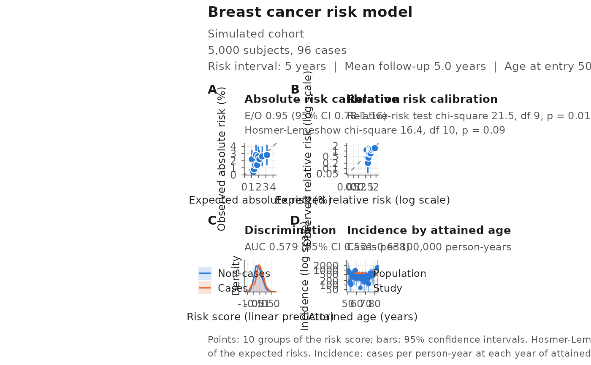
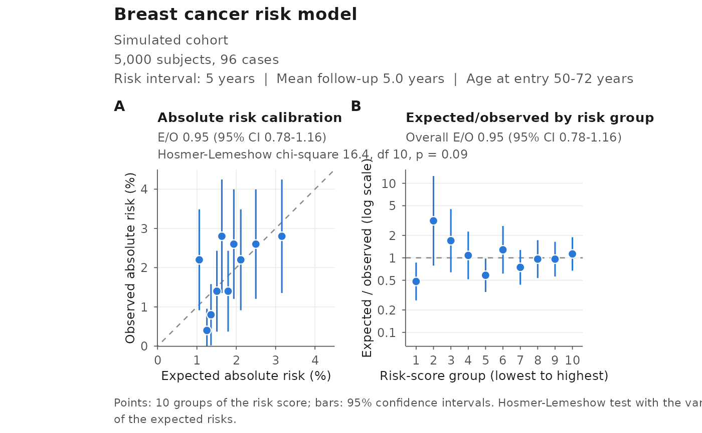

Draws a publication-ready figure of the results of ModelValidation():
A. Absolute risk calibration: observed against expected absolute risk (%) of each risk-score group, with 95% confidence intervals, E/O and the Hosmer-Lemeshow test;
B. Relative risk calibration: observed against expected relative risks on log scales, with the relative-risk test;
C. Discrimination: the distributions of the risk score in cases and non-cases, with the AUC;
D. Incidence by attained age: the study's incidence rates, with 95% confidence intervals, against the population incidence rates of the model (
model.disease.incidence.ratesof theiCARE.model.objectgiven toModelValidation(); without them, the study's rates only).
An optional panel shows the E/O ratio of each risk-score group
(panels = "eo"). Every panel is square, and the calibration panels have
the same limits on both axes, so that the line of perfect calibration runs
at 45 degrees.
Usage
plotModelValidation(
study.data = NULL,
validation.results,
dataset = NULL,
model.name = NULL,
x.lim.absrisk = NULL,
y.lim.absrisk = NULL,
x.lab.absrisk = "Expected absolute risk (%)",
y.lab.absrisk = "Observed absolute risk (%)",
x.lim.RR = NULL,
y.lim.RR = NULL,
x.lab.RR = "Expected relative risk",
y.lab.RR = "Observed relative risk",
risk.score.plot.kernel = "gaussian",
risk.score.plot.bandwidth = "nrd0",
risk.score.plot.percent.smooth = 50,
panels = c("absolute", "relative", "discrimination", "incidence"),
base.size = 10,
draw = TRUE
)Arguments
- study.data
The
study.datagiven toModelValidation(); by default the copy stored invalidation.results. Used for the sampling weights and the ages at entry.- validation.results
Result of
ModelValidation().- dataset, model.name
Names shown in the subtitle and title; by default those given to
ModelValidation().- x.lim.absrisk, y.lim.absrisk
Axis limits (in %) of the absolute risk panel; by default the same for both axes, from 0.
- x.lab.absrisk, y.lab.absrisk
Axis labels of the absolute risk panel.
- x.lim.RR, y.lim.RR
Axis limits of the relative risk panel; by default the same for both axes.
- x.lab.RR, y.lab.RR
Axis labels of the relative risk panel.
- risk.score.plot.kernel
Kernel of the risk-score densities (see
stats::density()).- risk.score.plot.bandwidth
Bandwidth of the risk-score densities: a number, or a rule of
stats::density()("nrd0","nrd","ucv","bcv","SJ"). In sampled data,"nrd0"and"nrd"use the weighted standard deviation and interquartile range and the effective sample size.- risk.score.plot.percent.smooth
Ignored; kept for compatibility with earlier versions.
- panels
Panels to draw, in order: any of
"absolute","relative","discrimination","incidence"and"eo"(E/O by risk-score group).- base.size
Base font size, in points.
- draw
If
TRUE(default), draw the figure.
Value
The figure, a patchwork object (invisibly when draw = TRUE). Save
it with ggplot2::ggsave(), e.g. ggsave("validation.pdf", figure, width = 8, height = 8.6) for the four default panels.
Examples
data(bc_data, package = "iCARE")
set.seed(50)
cohort <- validation.cohort.data[sample(nrow(validation.cohort.data), 5000), ]
validation <- ModelValidation(
study.data = cohort,
predicted.risk.interval = 5,
iCARE.model.object = list(
model.formula = bc_model_formula,
model.cov.info = bc_model_cov_info,
model.log.RR = bc_model_log_or,
model.ref.dataset = ref_cov_dat,
model.disease.incidence.rates = bc_inc,
model.competing.incidence.rates = mort_inc,
apply.cov.profile = cohort[, all.vars(bc_model_formula)[-1]]
),
dataset = "Simulated cohort",
model.name = "Breast cancer risk model"
)
figure <- plotModelValidation(validation.results = validation)

# E/O by risk-score group next to the absolute risk calibration
plotModelValidation(validation.results = validation,
panels = c("absolute", "eo"))
